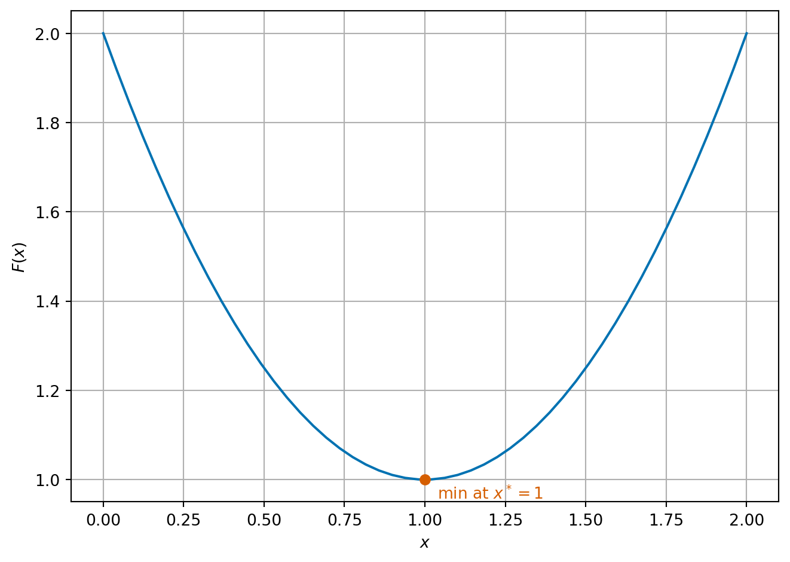
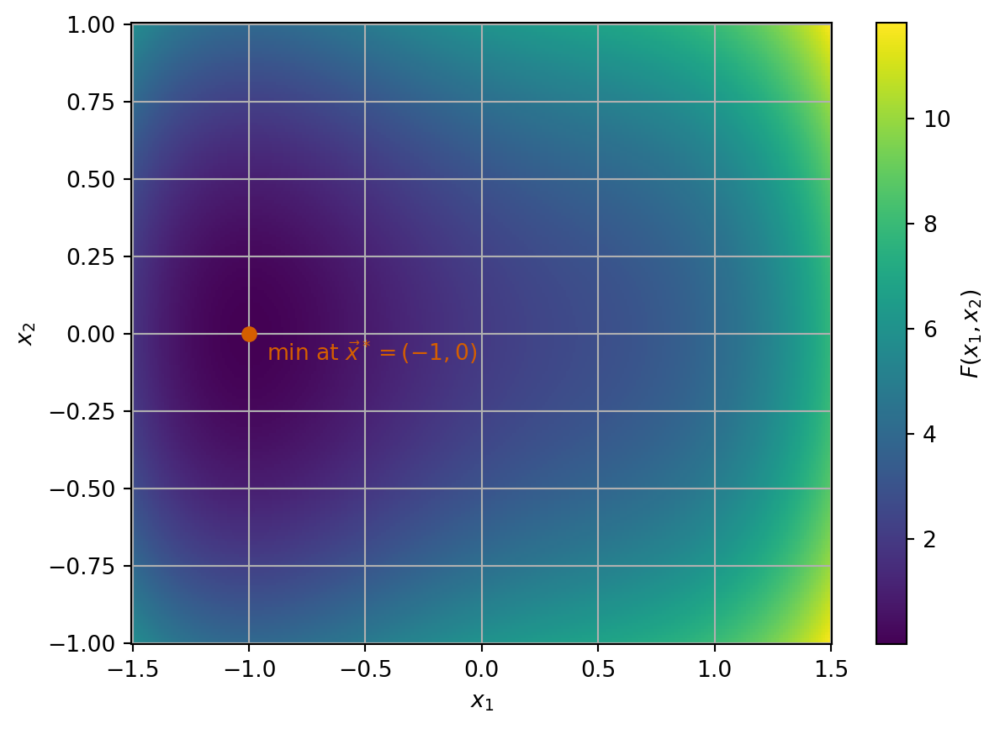
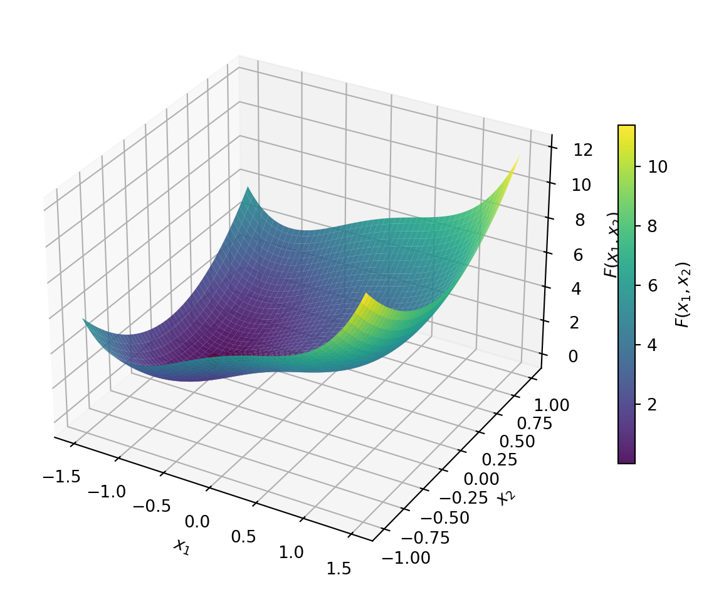
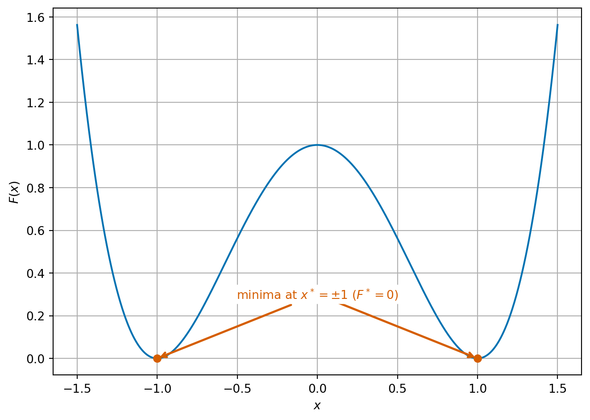
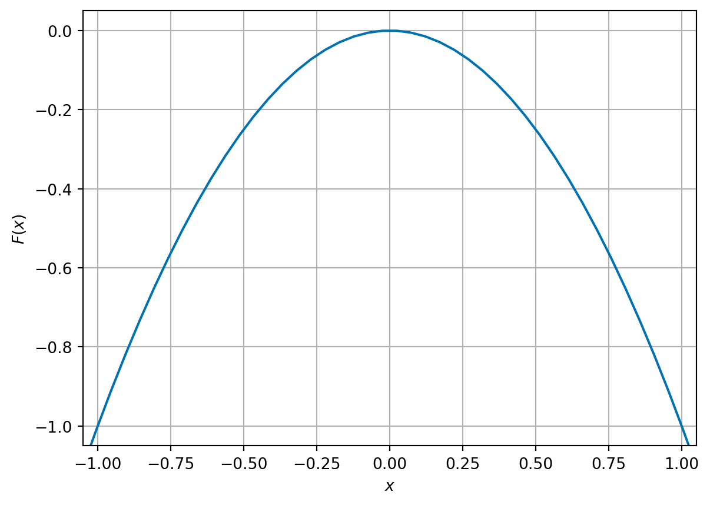
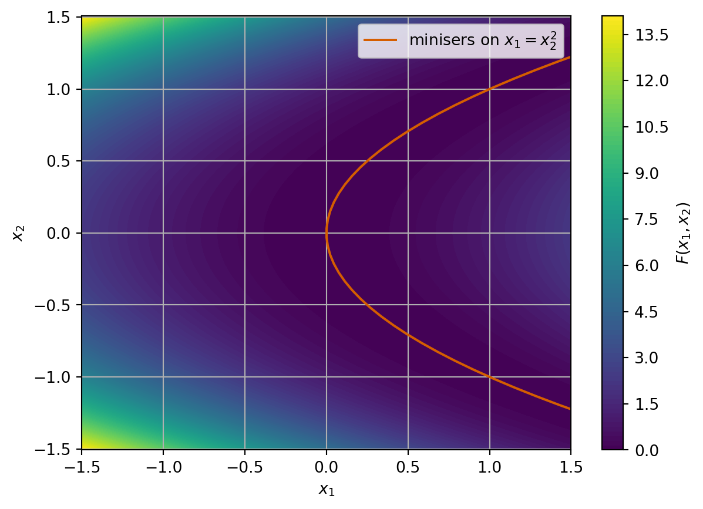
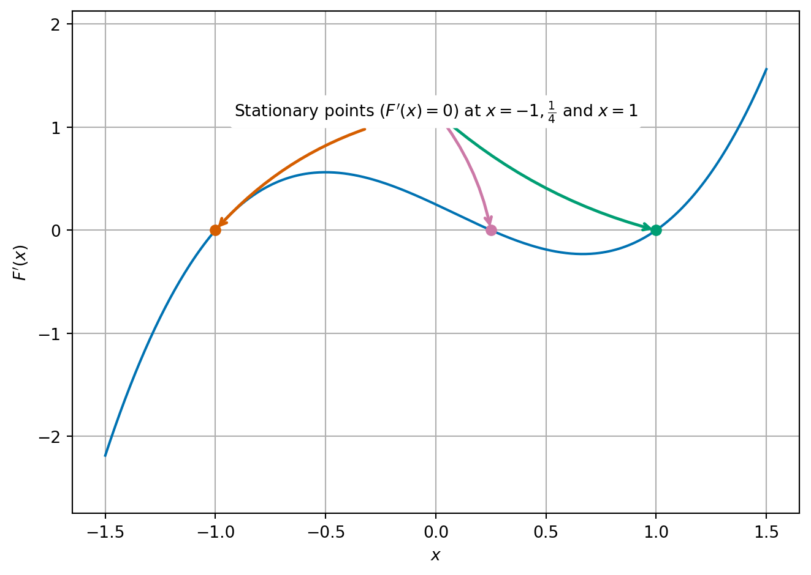
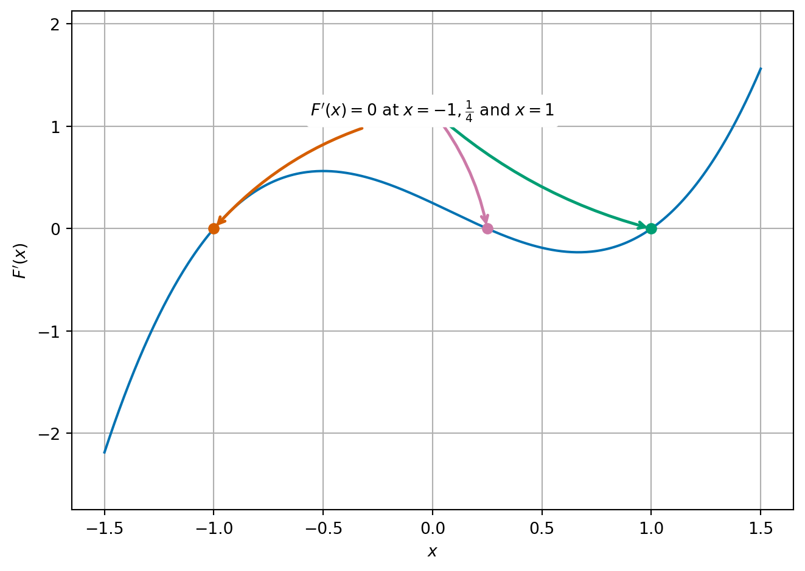
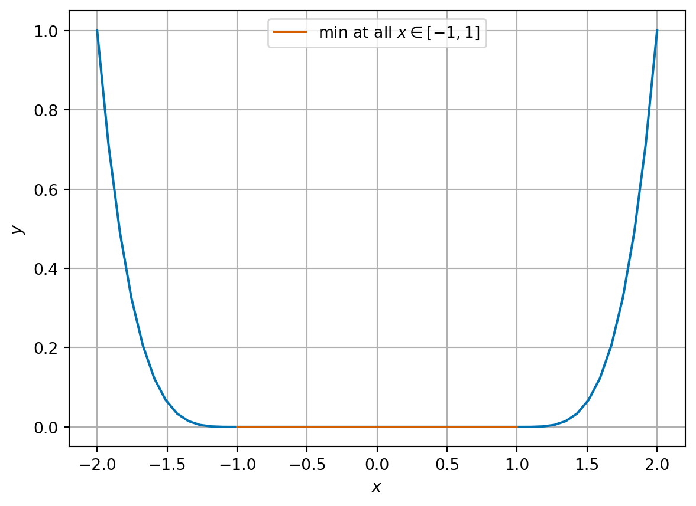

5 Introduction to optimisation
So far we have studied dynamical problems, where derivatives describe change over time. We now turn to a second major use of derivatives: identifying optimal choices. Later we will see these themes reunite, when optimisation methods are interpreted dynamically through a technique called gradient descent.
Optimisation is one of the key problems of all numerical computation. It corresponds to many real world problems:
- When making business decisions, we often want to find a solution which maximises our financial returns;
- When doing medical procedures, we may want to maximise the effectiveness of the procedure or minimise any potential side effects;
- When writing computer code, we (normally) want our code to run as fast as possible;
- When scheduling a train timetable, we may want to maximise the usage of the network, or minimise the cost of running the network, or maximise the robustness to delays of our timetable.
- When designing a social media app, we want to find the algorithm that encourages people to stay on the app the longest.
- When controlling a robotic arm, we may want to minimise the time or energy the solution takes.
- When doing any problem with data, we want to find the model or parameters that best fit the data.
- When training a neural network, we want to find the parameters of the network to best match the training data.
We make a distinction between problems where the set of possible solutions (admissible states) are continuous or discrete. For example:
- Choosing between distinct medical procedures is a discrete optimisation problem.
- Choosing how much of a drug to give is a continuous problem that can be modelled using real numbers.
This part of the module will deal with continuous optimisation problems.
All of the continuous optimisation problems above can be expressed in a general mathematical form.
We first need a set \(\mathcal{A}\) of admissible states (think of the amount of drug to be delivered or how it is delivered). For continuous problems \(\mathcal{A}\) will also be either an interval of the real line \(\mathbb{R}\) or a nice subset of the higher dimensional space \(\mathbb{R}^n\). Then we can ask what the outcome of that choice is; we model the outcome through a cost function (also called potential or loss function), which we label \(F \colon \mathcal{A} \to \mathbb{R}\).
Remark. In our examples, where we compute things, we will also have \(\mathcal{A} = \mathbb{R}\) or \(\mathbb{R}^n\).
The idea of optimisation is to find the best value \(x^*\) in \(\mathcal{A}\) which minimises \(F\) and the value of \(F^* = F(x^*)\) of the minimal cost.
Definition 5.1 We will write: \[\begin{equation} \label{eq:global-minimiser} \begin{aligned} F^* = \min_{x \in \mathcal{A}} F(x) \\ x^* = \mathop{\arg\min}\limits_{x \in \mathcal{A}} F(x). \end{aligned} \end{equation}\] We call \(x^*\) the minimiser and \(F^*\) the minimising value or minimal value. We note that the argmin may not be a single value but may be a set (containing more than one point). In examples, we often denote one such minimiser by \(x^*\).
Remark 5.1. In this section of the notes, we have included some proofs to demonstrate why many of the results are true. However, they will not be covered in the lectures and are not assessable (i.e. no questions on them will be in the exam). However, we do expect you to understand the results and statements (without proofs).
5.1 Some interesting examples
It is sometimes easy to see where the minimum of a function is by plotting the function.
In one dimension, we can simply plot the graph of the function. Let \(F \colon \mathbb{R} \to \mathbb{R}\) be given by \[ F(x) = x^2 - 2x + 2. \]
We can see that the minimum is \(F^* = 1\) at \(x^* = 1\).
It is hard to visualise functions in higher dimension. One possible idea is to plot slices, where we fix one or more variables at a time to leave a one or two dimensional function. However, this is not often a useful way to help find minimisers. In two dimensions, we can plot a heatmap of a function. This means that for each point in a two dimensional region, we assign a colour based on the value of the function. Each colour corresponds to a different function value. Let \(F \colon \mathbb{R}^2 \to \mathbb{R}\) be given by \[ F(\vec{x}) = F(x_1, x_2) = x_1^4 - x_1^2 + 2 x_1 + 4 x_2^2 + 2 \]

Here we can see a minimum at \(\vec{x}^* = (-1, 0)^T\) where \(F^* = 0\).
We can also show a similar plot, but now make a three dimensional surface where the height of the surface corresponds to the value of the function.

Before we come to some useful ways to find minimisers, we want to explore some other interesting cases.
Sometimes minimisers are not unique. We can have two values which both have the same minimal value. For \[ F(x) = (x^2 - 1)^2 \] we have two minima at \(x^* = -1\) and \(1\) which both have \(F^* = 0\).

Sometimes we can have infinitely many minimisers. Consider \[ F(x) = 1 + \sin^2(x). \]

Here, \(x^* = m \pi\) for any \(m \in \mathbb{Z}\) which all have \(F^*=1\).
Sometimes, we can have no minimisers at all! For \[ F(x) = -x^2, \] there is no minimiser in \(\mathbb{R}\). Indeed, for any candidate minimiser, we can always find a point where \(F\) takes a lesser value.

In two (or more) dimensions, the same things can happen. We can also have that minimisers lie on a straight line or curve: For example for \(F(x_1, x_2) = (x_1 - x_2^2)^2\) the minimisers lie on the curve \(x_1 = x_2^2\) with \(F^* = 0\).

5.2 Global and local minimisers
Consider the function \[ F(x) = \frac{1}{4} x^4 - \frac{1}{12} x^3 - \frac{1}{2} x^2 + \frac{1}{4} x + \frac{1}{2}. \]

This function has a minimum at \(x_* = -1\) with value \(F_* = \frac{1}{12}\) (orange), but there is another interesting value at \(x = 1\) (where \(F(x) = 5/12\), green). The point \(x = 1\) is clearly not a minimiser of the entire function, but the value at \(x = 1\) is less than values nearby. This motivates the idea of a local minimum.
Our definitions in \(\eqref{eq:global-minimiser}\), are global (i.e. a global minimiser). By this we mean that we are looking for the value that is the least across all possible values of \(x\). This is a very hard problem! When designing numerical algorithms, we instead often look for local minimisers. Later we will see a condition where we can guarantee local minimisers are global minimisers.
Definition 5.2 Scalar domain case: Given a smooth function \(F \colon \mathbb{R} \to \mathbb{R}\), we say that a point \(x^*\) is a local minimiser of \(F\) if there exists a value \(b\) such that for all \(y \in \mathbb{R}\) with \(|y - x^*| < b\), \(F(x^*) \le F(y)\).
Vector domain case: Given a smooth function \(F \colon \mathbb{R}^n \to \mathbb{R}\), we say that a point \(\vec{x}^*\) is a local minimiser of \(F\) if there exists a value \(b\) such that for all \(\vec{y} \in \mathbb{R}^n\) with \(\|\vec{y} - \vec{x}^*\| < b\), \(F(\vec{x}^*) \le F(\vec{y})\).
5.3 How to determine a local minimiser in the scalar domain case
Looking again at the examples above, we can see that at all (local or global) minimisers the slope of \(F\) is 0 (i.e. the graph is horizontal). We can express this mathematically by saying that the derivative of \(F\) is zero or \(F'(x_*) = 0\). However, the converse is not true: we see points such as the local minimal where the slope is zero but also other points with zero derivative too!
Proposition 5.1 Let \(F \colon \mathbb{R} \to \mathbb{R}\) and let \(x^*\) be a local minimiser of \(F\). Then \(F'(x^*) = 0\).
Proof. We see that the definition of local minima says that for \(h\) small enough that \[\begin{align*} F(x^* + h) - F(x^*) \ge 0, \end{align*}\] so \[\begin{align} \label{eq:positive-proof-a} \frac{F(x^* + h) - F(x^*)}{h} & \ge 0 && \text{if} \quad h \ge 0 \\ \label{eq:positive-proof-b} \frac{F(x^* + h) - F(x^*)}{h} & \le 0 && \text{if}\quad h \le 0. \end{align}\] If \(F\) is smooth, \(F'\) exists and the limit \[ F'(x^*) = \lim_{h\to 0} \frac{F(x^* + h) - F(x^*)}{h}, \] has a single value. The results of limits say that in this case \(\eqref{eq:positive-proof-a}\) and \(\eqref{eq:positive-proof-b}\) both hold in the limit too. This is only possible if \(F'(x^*) = 0\).
Example 5.1 Let \(F(x) = (x-3)^2 + 3 = x^2 - 6x + 12\). For the completed square form, we see that \(F\) has a minimum at \(x^* = 3\).
We can compute that \(F'(x)\) is given by \[ F'(x) = 2 x - 6. \] If we set \(F'(x) = 0\) we can rearrange to see \[\begin{align*} F'(x) = 2 x - 6 & = 0 \\ 2 x & = 6 \\ x & = \frac{6}{2} = 3. \end{align*}\]
Exercise 5.1 Let \(F(x) = \frac{1}{4} x^4 - 2 x^3 + \frac{11}{2} x^2 - 6 x + 1\). Identify any potential local minima by finding the derivative of \(F\) and finding all points with \(F'(x) = 0\).
We next revisit the example from the start of this section \[ F(x) = \frac{1}{4} x^4 - \frac{1}{12} x^3 - \frac{1}{2} x^2 + \frac{1}{4} x + \frac{1}{2}. \] We can compute the derivative as: \[ F'(x) = x^3 - \frac{1}{4} x^2 - x + \frac{1}{4}. \] Looking at the graph, we can see the \(F'\) is zero at three points, \(x = -1, 1\) (orange and green) which we have already identified as local minima, but also at \(x = \frac{1}{4}\) (purple).

We see that at the local minima (red and green points) the derivative is increasing but at the other point (orange), the derivative is decreasing. More formally, we can say that at local minima the second derivative is strictly positive. In this instance, we have \[ F''(x) = 3 x^2 - \frac{1}{2} x - 1, \] so that \[\begin{align*} F''(-1) &= 3 \times (-1)^2 - \frac{1}{2} \times (-1) - 1 = 3 + \frac{1}{2} - 1 = \frac{5}{2} = 2.5 > 0 \\ F''(\tfrac{1}{4}) &= 3 \times (\frac{1}{4})^2 - \frac{1}{2} \times \frac{1}{4} - 1 = \frac{3}{16} - \frac{1}{8} - 1 = -\frac{15}{16} = -0.9375 < 0 \\ F''(1) & = 3 \times 1^2 - \frac{1}{2} \times 1 - 1 = 3 - \frac{1}{2} - 1 = \frac{3}{2} = 1.5 > 0. \end{align*}\]
Proposition 5.2 Let \(F \colon \mathbb{R} \to \mathbb{R}\) and \(x^* \in \mathbb{R}\) such that \(F'(x^*) = 0\) and \(F''(x^*) > 0\). Then \(x^*\) is a local minimiser of \(F\).
Proof. We only sketch the proof here. The key idea is to use something called Taylor’s theorem, which gives us the formula that for \(x\) close to \(x^*\), we have that \[ F(x) \approx F(x^*) + (x - x^*) F'(x^*) + \frac{1}{2} (x - x^*)^2 F''(x^*). \] Applying that \(F'(x^*) = 0\) and \(F''(x^*) \ge 0\), we have \[ F(x) \approx F(x^*) + \frac{1}{2} (x - x^*)^2 F''(x^*) \ge F(x^*). \] This proof can be made rigorous with the help of further results from mathematical analysis.
Next, let us compare two examples:

For each example, we have chosen different pairs of points and drawn a straight line between them (green dashed line). We see, in the left hand side example, that sometimes the straight line is above the function (blue curve) and sometimes its below, whereas in the right hand side example, the straight line is above the function, and always will be for any pair of points. This idea is expressed mathematically through the idea of convexity.
Definition 5.3 A function \(F \colon \mathbb{R} \to \mathbb{R}\) is locally convex in an interval \(B \subset \mathbb{R}\) if for all points \(x, y \in B\): \[\begin{equation} \label{eq:convex} a F(x) + (1-a) F(y) \ge F(a x + (1-a) y) \quad \text{for all} \quad a \in [0, 1]. \end{equation}\] We say that \(F\) is convex if it is convex on \(\mathbb{R}\) (i.e., on every interval \(B \subset \mathbb{R}\)).
It is hard to show convexity with this definition directly. Instead, we normally use the follow equivalent formulations:
Lemma 5.1 Let \(F \colon \mathbb{R} \to \mathbb{R}\) be a smooth function. Then the following are equivalent:
- \(F\) is locally convex on an interval \(B\)
- The derivative of \(F\) satisfies \[\begin{equation} \label{eq:convex-diff} F(x) \ge F(y) + F'(y) (x-y) \quad\text{for all}\quad x, y \in B. \end{equation}\]
- The second derivative of \(F\) is positive in \(B\): \[\begin{equation} \label{eq:convex-diff2} F''(x) \ge 0 \quad\text{for all}\quad x \in B. \end{equation}\]
Remark 5.2. Condition 2 can be expressed informally as saying that the graph of \(F\) lies above its tangent.
Condition 3 links directly to the idea of linking local and global minima through Proposition 5.2.
Proof. We prove (1) is equivalent to (2) and (2) is equivalent to (3).
(1) \(\Rightarrow\) (2).
Assume \(F\) is (locally) convex on \(B\). Fix \(x,y\in B\) and \(a\in(0,1]\). By convexity, \[ aF(x)+(1-a)F(y)\;\ge\;F\big(ay+(1-a)x\big)=F\big(y+a(x-y)\big). \] Rearranging gives \[ F(x)\;\ge\;\frac{F\big(y+a(x-y)\big)-F(y)}{a}+F(y) \;=\;(x-y)\,\frac{F\big(y+h\big)-F(y)}{h}+F(y), \] where we set \(h:=a(x-y)\). As \(a\downarrow 0\) we have \(h\to 0\) (with the same sign as \(x-y\)). Since \(F\) is smooth, the difference quotient tends to \(F'(y)\) regardless of the sign of \(h\). Thus, \[ F(x)\;\ge\;F(y)+F'(y)(x-y), \] which is \(\eqref{eq:convex-diff}\).
(2) \(\Rightarrow\) (1).
We start with \(x, y \in B\) and let \(z = a x + (1-a)y\), then we have \[ F(x) \ge F(z) + F'(z) (x - z) \quad \text{and} \quad F(y) \ge F(z) + F'(z) (y - z). \] Multiplying the first inequality by \(a\) and the second by \(1-a\) and adding gives \[ a F(x) + (1-a) F(y) \ge F(z) + F'(z) (a (x-z) + (1-a) (y-z) ). \] But from the definition of \(z\), we have \[ a (x-z) + (1-a) (y-z) = a x + (1-a) y - z = 0. \] Hence, we can infer that \[ a F(x) + (1-a) F(y) \ge F(z) = F(a x + (1-a) y). \]
(2) \(\Rightarrow\) (3).
We can apply \(\eqref{eq:convex-diff}\) to see that for any \(x, y \in B\), we have \[\begin{align*} F(x) &\ge F(y) + F'(y)(x-y) \\ F(y) &\ge F(x) + F'(x)(y-x). \end{align*}\] Adding these inequality and rearranging gives \[ (F'(y) - F'(x))(y-x) \ge 0. \] This inequality says that \(F'\) is nondecreasing on \(B\). If we let \(y = x + h\) for \(h > 0\), we have \[ \frac{F'(x + h) - F'(x)}{h} \ge 0. \] Taking the limit \(h \to 0\) shows that \(F''(x) \ge 0\) \(\eqref{eq:convex-diff2}\).
(3) \(\Rightarrow\) (2).
This result is a little hard and relies on a result from mathematical analysis (the Mean Value Theorem) which is not covered by this course. The key idea is to show that \(F''(x) \ge 0\) \(\eqref{eq:convex-diff2}\) implies that \(F'\) is nondecreasing and then if \(F'\) is nondecreasing that \(\eqref{eq:convex-diff}\) holds.
Example 5.2 We see that Condition 3 in Lemma 5.1 is often the easiest to show.
Take for example \(F(x) = x^2 - 4 x + 5\). Then \[ F'(x) = 2 x - 4 \quad\text{and}\quad F''(x) = 2 > 0. \] Hence we can see that \(F\) is convex.
This example, is somewhat of a prototypical example. It is often helpful when thinking of convex functions to think of something like a quadratic function with positive leading coefficient.
(hard) Take \(F(x) = \frac{1}{4} x^4 - 3 x^3 + 15 x^2 - 5 x + 4\) \[\begin{align*} F'(x) & = x^3 - 9 x^2 + 30 x \\ F''(x) & = 3 x^2 - 18 x + 30. \end{align*}\] We can complete the square to see that \[ F''(x) = 3 (x - 3)^2 + 3 \ge 3 > 0. \] We can see that \(F''\) is in fact strictly positive. Hence, we can infer that \(F\) is globally convex.
Exercise 5.2 Show that the following functions are or are not convex on \(\mathbb{R}\):
- \(F(x) = x^2 - 6x + 12\)
- \(F(x) = \frac{1}{6} x^4 - \frac{8}{3} x^3 + 15 x^2 + 6 x + 1\).
Proposition 5.3 Let \(F \colon \mathbb{R} \to \mathbb{R}\) and \(x^*\) be a point such that \(F'(x^*) = 0\). If \(F\) is locally convex in a region \(B\) with \(x^* \in B\) then \(x^*\) is a local minimiser of \(F\).
Proof. Let \(y \in B\), then from Lemma 5.1, we have \[ F(y) \ge F(x^*) + F'(x^*)(y - x^*). \] Since \(F'(x^*) = 0\), we see that \[ F(y) \ge F(x^*) + F'(x^*)(y - x^*) = F(x^*) + 0 (y - x^*) = F(x^*). \] Hence we can see that \(x^*\) is a local minimiser in the interval \(B\).
Theorem 5.1 Let \(F \colon \mathbb{R} \to \mathbb{R}\) be convex. Then any local minimiser is a global minimiser.
Proof. Let \(x^*\) be a local minimiser of \(F\), then \(F'(x^*) = 0\) (from Proposition 5.1). Applying Lemma 5.1, we see that for any \(y\), we have \[ F(y) \ge F(x^*) + F'(x^*)(y - x^*) = F(x^*). \] Hence \(x^*\) is in fact a global minimiser.
Example 5.3 Take the same example as before \(F(x) = x^2 - 4 x + 5\). Then \[ F'(x) = 2 x - 4. \] We can easily see that \(F'(2) = 0\) hence \(x^* = 2\) is a local and indeed a global minimiser since \(F\) is convex.
We can also see this by completing the square: \[\begin{equation*} F(x) = x^2 - 4 x + 5 = (x-2)^2 + 1. \end{equation*}\] We can read off that \(F\) has a minimum at the same point that \((x-2)^2 = 0\), i.e. that \(x^* = 2\).
Remark 5.3. Minimisers of convex functions are not necessarily unique. Consider \(F \colon \mathbb{R} \to \mathbb{R}\) given by \[ F(x) = \begin{cases} (x+1)^4 & \text{for}\quad x \le -1 \\ 0 & \text{for} \quad -1 < x < 1 \\ (x-1)^4 & \text{for}\quad x \ge 1. \end{cases} \]

\(F\) is a convex, smooth function, but all points \(x \in [-1, 1]\) are minimisers.
5.4 Summary
Optimisation is a wide area of numerical computation with many different application areas. In this module, we will only consider continuous optimisation problems. We have provided several examples of how different types of minima can occur in one and two dimensions using plots to identify minima. In one dimension, we have provided a characterisation of local minima and how to link them to global minima using the idea convexity.